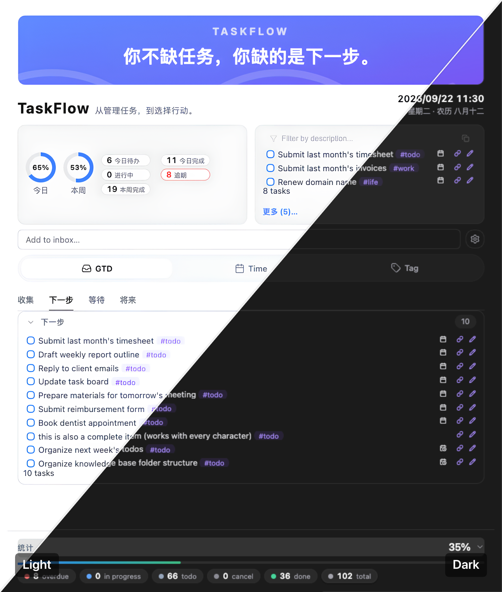
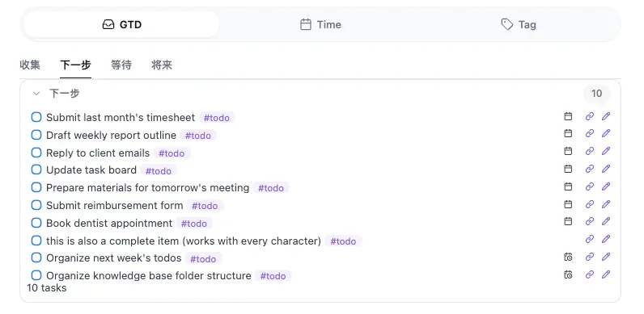
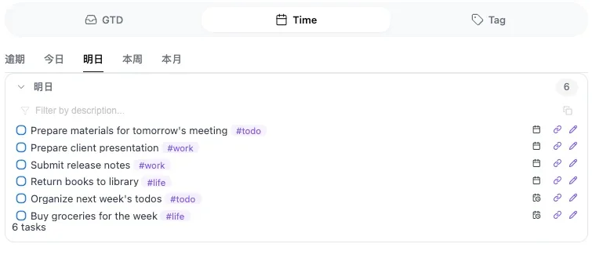
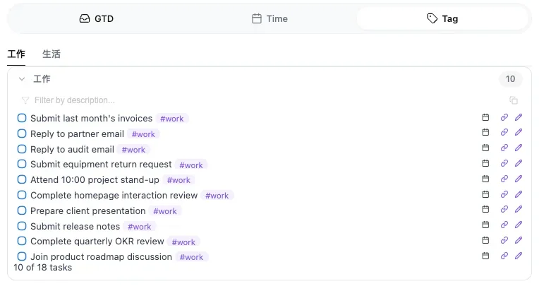

插件功能演示：TaskFlow 行动空间实际操作
为什么做 TaskFlow
在 Obsidian 里做任务管理，绕不开两个已有的选择：Tasks 和 TaskNotes。它们各自都很强，但走的是不同的路。
- Tasks 已经是一套非常强大的任务系统：成熟的任务语法、查询能力和渲染机制，性能也足够优秀，我们没必要重复造轮子。但它并不是一个强大的视觉前端——任务展示和汇总界面能用，但不够丰富，也不够灵活可配置。
- TaskNotes 在前端展示方面确实功能强大。但它有一个前提：每一个任务都需要建立一篇独立的笔记。这种方式适合需要大量任务上下文、笔记和属性管理的场景；可为一句话任务建一篇笔记，多少有点太重了。
我喜欢把任务作为列表，直接写在笔记里。但我需要一个强大、灵活的前端——这正是我开发 TaskFlow 的初衷：用 Tasks 强大的任务引擎，配上 TaskFlow 简洁、灵活、适合行动的前端界面。
| 对比 | Tasks | TaskNotes | TaskFlow |
|---|---|---|---|
| 核心定位 | 强大的任务引擎 | 任务 + 笔记工作台 | 任务行动工作台 |
| 核心优势 | 任务语法、查询、性能 | 强大的任务前端与笔记能力 | 轻量任务 + 强大前端展示 |
| 任务颗粒度 | 一句话到复杂任务都行 | 适合有独立笔记价值的任务 | 一句话到复杂任务都行 |
| 任务语法 | 原生 | 有自己的体系 / 集成方式 | 直接使用 Tasks |
| 查询能力 | 强大 | 强大 | 继承 Tasks 能力 |
| 性能基础 | 成熟、优秀 | 功能更丰富 | 建立在 Tasks 之上 |
| 任务展示 | 相对基础 | 强大、丰富 | 重新设计，强调简洁和效率 |
| 任务汇总 | 基础 | 强大 | 强化汇总与场景展示 |
| 视图体验 | 偏任务查询 | 偏任务笔记 | 偏行动选择 |
| 使用方式 | 管理任务 | 管理任务及其内容 | 找到当前该做什么 |
| 学习 / 迁移成本 | 原有习惯 | 需要适应任务笔记模型 | 几乎不改变原有习惯 |
| 适合的人 | 喜欢纯任务系统的人 | 希望任务与笔记深度结合的人 | 喜欢任务列表，又希望拥有更好前端的人 |
注：Tasks 和 TaskNotes 都是非常优秀的插件，这里的对比只是基于个人使用习惯，仅代表个人观点。
TaskFlow 解决什么
TaskFlow 解决的不是「任务太多」，而是「选择太难」。行动之前的选择，本身就成了一种负担。
传统任务管理主要解决
把事情记下来，避免遗忘。
但真正到了行动时
从这么多事情里，找到此刻值得做的那一件。
这是一种行动决策成本。任务越多、场景越复杂、上下文越频繁变化，这种成本就越高。TaskFlow 希望减少的正是这一步。
从「任务」走向「行动」的工作台
它不是让你建立一套新的任务系统。TaskFlow 要做的是：让你换一个角度重新审视这些任务，从管理任务走向选择行动。
| 维度 | 传统任务管理（任务空间） | TaskFlow（行动空间） |
|---|---|---|
| 核心目标 | 管理事情（怕忘了） | 推动行动（不知道先做啥） |
| 关注焦点 | 看见所有任务（Task） | 聚焦当前行动（Action） |
| 大脑角色 | 思考引擎（我有什么要做？） | 执行引擎（我现在做什么？） |
| 操作过程 | 找任务 → 判断 → 选择 | 场景 → 筛选 → 行动 |
| 最终结果 | 认知过载，积累焦虑 | 消灭阻力，即刻开始 |

缩小选择范围，切入当前上下文
TaskFlow 利用任务本身已经存在的信息，帮助你缩小选择范围，把任务放回不同的行动上下文中。
下一步该做什么？
帮助你从任务列表中找到可以继续推进的下一步。

今天该做什么？
帮助你从时间维度找到今天真正需要面对的事情。

在这个场景下该做什么？
帮助你根据当前的工作环境、工具或场景，找到此刻适合做的事情。

当前上下文 → 缩小范围 → 找到行动 → 开始
任务不再只是一个等待完成的列表项，而成为一个可以根据上下文被重新发现的行动。
你将收获什么
不是帮你管理更多任务，而是帮你更快开始下一件事。
零决策瘫痪，即刻启动
打开 Obsidian 的瞬间，不再面对几十条待办发呆，一眼锁定当前最值得做的事。
零迁移与学习成本
完全兼容现有的 Tasks 语法与数据，不改变记录习惯，即装即用。
意志力解脱，专注执行
把「挑选任务」的消耗降至最低，将宝贵的注意力全额注入到真正的「行动」中。
自然进入心流（Flow）
用结构化的 TaskFlow 消除行动阻力，让任务顺畅流转，让大脑轻松滑入专注的心流状态。
安装指南
TaskFlow 目前尚未上架 Obsidian 社区插件中心，你需要通过以下两种方式之一手动安装。
通过 BRAT 插件安装
BRAT（Beta Reviewers Auto-update Tool）是社区中安装与自动更新未上架插件的常用工具。安装后插件可自动跟随 GitHub 仓库更新，无需每次手动下载。
之后每当仓库有新版本发布，BRAT 会自动提示或帮你更新，无需手动操作。
手动安装
如果不想使用 BRAT，也可以直接从 GitHub 下载文件，手动放入插件目录。
├── main.js
├── manifest.json
└── styles.css